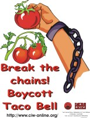

The Coalition of Immokalee Workers and the IWW
By Rob Augman, May 12, 2001
 The most important, practical sense in which the CIW shares an organizing culture with the IWW is in the emphasis on consciousness as the basis of action. We have several mottoes that serve to express the practical/philosophical bases of our organization, one of which is "Consciousness + Commitment = Change". The saying puts consciousness as the fundamental, first ingredient in the process of making change, as it was in the work of the IWW. And like with the IWW (as well as the peasant movements of today in Latin America and the Caribbean, from which we also draw a great deal of inspiration for our organizing approach), we use images, art, theater, and music to capture the problems of low wage workers' lives, present those problems for reflection, and arrive at a unified, class-based solution to those problems.
The most important, practical sense in which the CIW shares an organizing culture with the IWW is in the emphasis on consciousness as the basis of action. We have several mottoes that serve to express the practical/philosophical bases of our organization, one of which is "Consciousness + Commitment = Change". The saying puts consciousness as the fundamental, first ingredient in the process of making change, as it was in the work of the IWW. And like with the IWW (as well as the peasant movements of today in Latin America and the Caribbean, from which we also draw a great deal of inspiration for our organizing approach), we use images, art, theater, and music to capture the problems of low wage workers' lives, present those problems for reflection, and arrive at a unified, class-based solution to those problems.
Joe Hill's claim to fame was his ability to draw simple, but powerful, images and to compose moving songs that workers across the different ethnic and linguistic groups, literate or no, could use to learn of the ideology of the IWW and share their ideology as workers across otherwise divisive ethic lines. Much of our work is directed toward the same objective, and if you get a chance to come down you can see some of the collected archives of the art and theater of our struggle, you'll see what I mean (a few examples are posted on the web site under the category of our history and archives, where it talks about popular education - though the term didn't exist at the time, the IWW is undoubtedly the first major labor movement to practice the methodology of popular education).
The composition of our membership and our community, of course, is another dimension of our reality in which we find a lot of resonance with the IWW. Like the Wobblies, CIW members are recently arrived immigrants, speaking a multitude of languages with a higher illiteracy rate than the rest of the country, the most transient of laborers in the country today, and the absolutely poorest of all workers in the country today. All those things serve to make a successful organizing approach with undocumented farmworkers in Immokalee very different from that employed in organizing an auto plant or a service workers in more stable, less diverse, better-off labor forces.
That reality forces us to be more political, more public, more class conscious, than other worker organizations, as does the fact that farmworkers are excluded from the National Labor Relations Act, leaving farmwork the one major industry today in which exists essentially the same dynamic as when the IWW was most alive -- where only through strikes and direct workplace actions could pressure be brought on the bosses to make concrete change.
In fact, that's why we have had to organize three general strikes here in Immokalee since 1995. Strikes like the IWW's "social general strikes", our strikes are community-wide actions where workers, regardless of workplace or company, come together to fight for a new relationship with the companies based on greater power and respect for workers, a better "going wage", and overall better conditions due to the improved position of power staked out by the workers coming together against the industry as a whole. Our strikes have always been industy-wide, even including the active participation of workers across industries (orange pickers and day-haul workers striking together with tomato pickers for a raise in the tomato picking piece rate.
Indeed, Lucas was an orange picker who got involved in the CIW through the first tomato strike in 1995). Workers come together in this way in our actions because the actions are based on a broad class consciousness and are not workplace-specific.
And the beautiful time-worn slogan of "An injury to one is an injury to all" has been a practical, real rallying cry in our history as an organization, capturing a moment that is as important as any in our history. In 1996, one of members came into the office in the afternoon covered in blood -- he had been beaten severely for the crime of wanting to take a drink of water in the field when his supervisor didn't want him to. Beatings were a commonplace occurence in the fields before the CIW, but as one of our first campaigns we decided to establish a new relationship with the community's immediate employers, the crewleaders, many of whom live here in town. With that beating, we organized a march of 400-500 members, at night, to the house of the crewleader responsible for the beating and declared, in exact terms and with one voice, that an injury to one CIW member is an injury to all.
Never before had a message like that been heard in this town, where a culture of individualism and fear had predominated, and never before had the worker community itself, as a community, so powerfully confronted such a local "caudillo" as that crewleader and his family. That march declared that things had forever changed here in Immokalee, and as evidence there has not been one more case of violence against workers in Immokalee since that time 5 years ago. No crewleader wants to visit the same kind of humiliation and fear upon his family as the guy in that case did, and so no one dares to beat their workers in the fields any more.
That is not something a union would do. That is something the IWW would do, because it goes to building the power and the voice of workers as a class.
Our focus on consciousness, on grassroots leadership, on the general strike as our primary weapon, on working with a multi-ethnic population of the country's poorest workers, on placing our focus on the industry as a whole rather than on any particular worksite, on community as well as labor issues (like the freedom of speech fights), all those things bring us to feel a real, practical kinship with the IWW.
Though the wage system is a little more well-established today than it was a century ago, when capitalism was just defining itself and the alternatives were just as possible as the further development of capitalism itself, the IWW distinguished itself more in the way it worked than in its goals (which all kinds of political parties and labor organizations shared at the time without nearly the impact that the IWW managed to have). It was the IWW's real, concrete, hardnosed approach to organizing the most difficult community of workers to organize (the community that big labor rejected, but the community where class consciousness was most alive because of the desperation of its conditions) that distinguised the IWW most effectively and it is that approach that we feel a strong association with, though there are obvious differences.